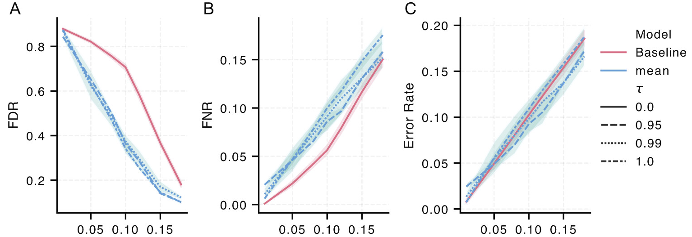

En 2017 pasé unos meses en la UNICAMP en Brasil. Después de la pasantía, me quedaban apenas el tiempo y la plata suficientes para visitar Cabo Frio, cerca de Río de Janeiro. Fue hermoso: agua transparente, peces por todos lados, y ese tipo de paisaje costero que te hace olvidar que después de hacer snorkel al lado de un acantilado todavía tenés que volver a subir.
El último día, mientras trepaba por un acantilado después de que las olas me empujaran contra las rocas, me corté la pierna izquierda. Al principio fue molesto pero manejable. Después se infectó. Ya de vuelta en Buenos Aires, la herida siguió empeorando a pesar del tratamiento, pasé meses rengueando, y al final me quedó una cicatriz negra bastante fea que todavía tengo. Eventualmente los médicos encontraron un antibiótico que funcionó. Muchas personas con infecciones resistentes a antibióticos no tienen esa suerte.
La Organización Mundial de la Salud describe la resistencia a antibióticos (AMR, por sus siglas en inglés) como una de las principales amenazas globales para la salud pública y el desarrollo. La escala es difícil de exagerar: se estima que la resistencia bacteriana fue responsable directa de 1.27 millones de muertes en 2019, y estuvo asociada a 4.95 millones de muertes. Además, la AMR vuelve más riesgosa a la medicina rutinaria. Cirugías, quimioterapia, cesáreas, trasplantes y cuidados intensivos dependen de poder prevenir o tratar infecciones cuando algo sale mal. Si más infecciones dejan de responder a los fármacos disponibles, la medicina moderna pierde parte de su red de seguridad.
A nivel individual, el problema es brutalmente práctico. Un paciente llega con una infección. La clínica necesita saber qué antimicrobiano va a funcionar. El estándar de referencia es el test de susceptibilidad a antibióticos: cultivar el microorganismo en presencia de distintos fármacos y observar si sobrevive. Es confiable, pero lleva tiempo. En infecciones graves, cada hora importa, así que los médicos suelen empezar un tratamiento empírico y ajustarlo cuando llegan los resultados del laboratorio.
Ese espacio entre “tenemos que tratar ahora” y “el test definitivo tarda más” es donde los modelos predictivos pueden ayudar.
MALDI-TOF como huella microbiana
Muchos laboratorios de microbiología clínica ya usan espectrometría de masas MALDI-TOF para identificar microorganismos. La idea es elegante: ionizar una muestra microbiana, medir el perfil masa-carga de moléculas abundantes, y comparar el espectro resultante con bases de datos de referencia. En la práctica, MALDI-TOF es rápido, relativamente barato una vez que el instrumento está instalado, y ya forma parte de flujos diagnósticos rutinarios.
La pregunta es si esos mismos espectros pueden decir algo más que “esto es E. coli” o “esto es Klebsiella pneumoniae”. ¿Pueden también revelar si el aislado es resistente a un antimicrobiano concreto? La demostración inicial a gran escala vino de la mano de un artículo en Nature Medicine, que mostró que los espectros MALDI-TOF pueden contener señal suficiente para predecir resistencia antimicrobiana directamente a partir de datos rutinarios de microbiología clínica.
Ese fue el punto de partida de nuestro artículo en Bioinformatics de 2023, cuya contribución principal fue unificar esas predicciones en un único modelo multimodal. La resistencia no es una propiedad binaria de una bacteria en abstracto. Siempre es resistencia a algo: ampicilina, ciprofloxacina, meropenem, etc. Entonces, en lugar de entrenar modelos separados para cada antibiótico, representamos su información química y dejamos que un único modelo aprendiera a partir de los pares organismo-fármaco.
Este planteo importa porque los datos clínicos son escasos y desparejos. Algunas combinaciones especie-fármaco son comunes; otras son raras. Algunos hospitales tienen muchos ejemplos; otros, pocos. Un modelo que puede compartir información entre antimicrobianos relacionados tiene más chances de generalizar a escenarios donde los datos directos de entrenamiento son limitados.
De precisión a confiabilidad
En nuestro reciente artículo de RECOMB 2025, pasamos a una pregunta distinta pero complementaria: si un modelo predice resistencia a partir de espectros MALDI-TOF, ¿cómo puede producir una lista de advertencia clínicamente útil?
Acá entra la predicción conformal. Los clasificadores estándar suelen devolver probabilidades, pero esas probabilidades no son automáticamente confiables. Un modelo puede decir “90%” y aun así estar mal calibrado. En nuestro caso, el predictor conformal no devuelve {susceptible} o {resistente} para cada antibiótico por separado. Devuelve un conjunto de antibióticos predichos como resistentes para ese aislado: en la práctica, una lista de fármacos que los médicos deberían evitar, o al menos tratar como riesgosos, mientras esperan el test de susceptibilidad más lento basado en cultivo.
La garantía tiene que ver con no pasar por alto la resistencia. Dado un nivel de error elegido por el clínico, el conjunto conformal se construye para que, en promedio, contenga todos los antibióticos verdaderamente resistentes con la cobertura deseada. En otras palabras, el modelo puede ser conservador y marcar fármacos de más, pero está controlado estadísticamente en cuántas veces deja sin marcar un fármaco al que la bacteria realmente es resistente.

Figura 1. Flujo completo del artículo de AMR conformal. Una muestra de paciente se cultiva, se obtiene un espectro MALDI-TOF, se identifica la especie, y se evalúa un conjunto de antibióticos clínicamente relevantes para esa especie. Un clasificador ResMLP-GNN alimenta un predictor conformal, que devuelve los antibióticos marcados como resistentes. El grafo de conocimiento de abajo codifica relaciones entre antibióticos relacionados, como carbapenems, fluoroquinolonas, penicilinas y cefalosporinas.
El desafío técnico es que la predicción de AMR tiene estructura. Especies, antimicrobianos, mecanismos de resistencia y mediciones de laboratorio no son islas independientes. Si un aislado de Klebsiella pneumoniae es resistente a un carbapenem, eso debería informar cómo pensamos otros carbapenems relacionados. El grafo de conocimiento es una manera de inyectar esa estructura en el problema en lugar de tratar cada antibiótico de forma independiente.
Qué ve el modelo y qué devuelve
Como entrada, el modelo recibe un espectro MALDI-TOF y un panel de antibióticos clínicamente relevantes para la especie. El clasificador asigna a cada antibiótico una puntuación de resistencia. La capa conformal umbraliza esas puntuaciones usando datos de calibración y devuelve un conjunto como {ceftriaxona, ciprofloxacina, levofloxacina, amoxicilina-clavulánico}: antibióticos que, según el modelo, no deberían considerarse confiables para ese aislado.
La interpretación clínica exacta requiere validación cuidadosa e integración con flujos de trabajo expertos. Estos modelos no reemplazan a microbiólogos ni a los tests de susceptibilidad. La ventaja que estos modelos pueden aportar es una forma de triaje temprano: una señal rápida, consciente de su incertidumbre, que diga “evitá estos fármacos” mientras el ensayo definitivo sigue corriendo.

Figura 2. Antes de envolver el modelo con predicción conformal, igual necesitamos un clasificador que tenga señal útil. Esta figura muestra curvas ROC y de precisión-recall para Klebsiella pneumoniae en diez antibióticos. Las curvas ROC son en general fuertes, mientras que las curvas de precisión-recall varían más entre fármacos, algo esperable en escenarios de resistencia con clases tan desbalanceadas.
Esta es la capa de base: los espectros contienen información sobre resistencia, pero el rendimiento no es uniforme entre antibióticos. Algunos fármacos son más fáciles de predecir que otros, y el desbalance de clases importa. Por eso una capa calibrada de incertidumbre es útil. No queremos solo una puntuación; queremos una lista de fármacos a evitar cuya probabilidad de omitir antibióticos resistentes pueda controlarse.
Por qué esto importa para vigilancia de AMR
El caso clínico es solo una parte de la historia. La AMR también es un problema de vigilancia epidemiológica. Los hospitales y sistemas de salud pública necesitan saber qué cepas resistentes se están expandiendo, dónde y a qué velocidad. MALDI-TOF es atractivo para esto porque muchos laboratorios ya generan espectros a gran escala. Si los modelos predictivos pueden extraer señales de resistencia de espectros rutinarios, podrían contribuir a sistemas de alerta temprana.
Pero los modelos de vigilancia tienen que ser robustos al cambio de distribución. Un modelo entrenado en un hospital puede encontrarse con otra prevalencia de especies, otros protocolos de preparación de muestras, otros instrumentos y otros mecanismos de resistencia en otro lugar. Esta es otra razón por la que la incertidumbre no es cosmética. Cuando un modelo se despliega fuera del entorno en el que fue entrenado, una advertencia calibrada que diga “no sé” puede ser tan importante como una predicción positiva correcta.

Figura 3. La capa conformal permite elegir un objetivo de error y observar el compromiso entre tasa de falsos descubrimientos, tasa de falsos negativos y error total. Acá, un falso negativo significa no marcar un antibiótico al que el aislado es resistente. Un falso descubrimiento significa marcar un antibiótico que en realidad habría sido efectivo. Las variantes con grafo de conocimiento reducen falsos descubrimientos preservando el comportamiento de cobertura esperado de la predicción conformal.
Esta es la parte que me parece más relevante clínicamente. Si el conjunto es demasiado chico, podemos omitir resistencia y dejar sobre la mesa un antibiótico peligroso. Si el conjunto es demasiado grande, podemos descartar fármacos útiles y empujar a los médicos hacia alternativas más amplias o más tóxicas. La predicción conformal no elimina ese compromiso, pero lo hace explícito y ajustable.
Una cicatriz y un problema de modelado
Mi cicatriz de Cabo Frio es un recordatorio pequeño y personal de algo mucho más grande. Tuve acceso a atención médica, seguimiento diagnóstico y, eventualmente, a un antibiótico que funcionó. La infección fue dolorosa e incómoda, pero no fue catastrófica. La AMR convierte ese tipo de episodio en una lotería bastante más peligrosa.
El aprendizaje automático no va a resolver la resistencia a antibióticos por sí solo. Las prioridades de la OMS son más amplias y más fundamentales: prevenir infecciones, mejorar el diagnóstico, asegurar tratamientos adecuados, fortalecer la vigilancia, desarrollar nuevos diagnósticos y medicamentos, y usar antimicrobianos responsablemente. Los modelos predictivos viven dentro de ese ecosistema más amplio.
Aun así, hay un rol concreto para el trabajo computacional. Si ya se están recolectando espectros MALDI-TOF, y si podemos convertirlos en listas tempranas y estadísticamente controladas de antibióticos a evitar, entonces quizás podamos apoyar decisiones terapéuticas más rápidas y una mejor vigilancia. La clave no es solo tener buena precisión en un benchmark. Es ser confiables, transparentes con la incertidumbre y honestos sobre cuándo el modelo llegó al límite de lo que los datos pueden decir.
Para mí, eso hace que el problema valga la pena. En algún punto entre una playa en Cabo Frio, una cicatriz en mi pierna izquierda y un espectro de masas en un laboratorio de microbiología, hay un recordatorio de que la resistencia a antibióticos no es abstracta. Es un problema de modelado, un problema clínico y, para muchos pacientes, una carrera contra el tiempo.